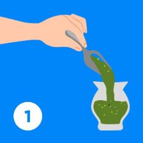
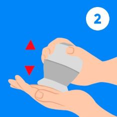
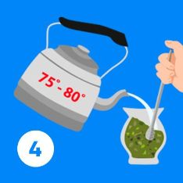
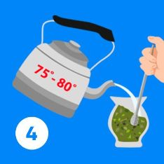
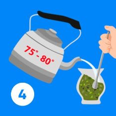

Consejos para preparar el mejor mate
- Temperatura del agua
- No mojar toda la yerba
- No dejar de cebar
- No mover la bombilla
- Usar un mate con boca ancha
Empezar a cebar con agua tibia y después ir aumentando gradualmente la temperatura, hasta llegar a unos 75 Cº. Si el agua está muy caliente o hervida, los mates van a ser muy amargos y sin sabor, la yerba se "quema". Cuanto más blanda es el agua soporta más temperatura, y si es dura tiene que usarse más tibia.
Un mate lavado es un mate sin sabor... hora de cambiar la yerba.
Cebar siempre cerca de la bombilla y con poca agua. La "montañita" de yerba seca que dejamos al mezclar la yerba, es la que vá a alimentar los mates y hacer que el sabor se mantenga.
Si dejamos de cebar, la yerba se enfría y pierde más rápido el sabor. La ronda debe fluir y el mate circular.
El mate también se lava cuando toda la yerba está mojada
Se recomienda mover lo menos posible la bombilla una vez que se inicie el mate. ¿Las razones? Porque se puede tapar y también, al mover la bombilla la yerba seca que alimenta los mates, se moja mas rápido y el mate “rendirá” menos.
Para que la superficie que ocupa la yerba seca sea mayor, y poco a poco con cada cebada, ir mojando esa yerba. El objetivo es lograr que del primero al último.. tus mates tengan más sabor y sean inolvidables.


 

